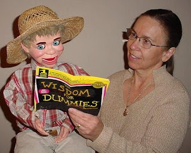

Wisdom For Dummies
11/24/2009
{kind=link}

By Sandi Stricker
I'm still new at this ventriloquism - a little over a year into it. I am writing my own scripts, and must say memorizing them certainly is good for exercising the brain at my age. To help me get through a script, sometimes Woody (Mr. Woodrow) has to refer to his reference book, "WISDOM FOR DUMMIES".
I'm still new at this ventriloquism - a little over a year into it. I am writing my own scripts, and must say memorizing them certainly is good for exercising the brain at my age. To help me get through a script, sometimes Woody (Mr. Woodrow) has to refer to his reference book, "WISDOM FOR DUMMIES".
I used one of those paperback books with the yellow and black cover called "Internet (or whatever) for Dummies". I took black paint and painted over the "INTERNET" word, and then in yellow paint, painted in the word "WISDOM", so now it read "WISDOM for DUMMIES".
I only use the front cover, and then folded it in half, so when open, the audience sees the cover and the words "WISDOM FOR DUMMIES". I made a couple pages in it, and occasionally he needs to look something up and therefore we have a paragraph of script in front of us.
I stapled the corner of the book to his shirt cuff so it looks like he is holding it in his other hand. Then when he refers to it, I hold the other side in my hand. The audience seems to get a kick out of his Wisdom for Dummies book, even though I never refer to him as a "dummy" (ventriloquisimy incorrect as I learned from your course).
An example of what I put in it for reference and patter assistance include: What the Economic Stimulus Payment is and where the money goes; For bosses day I had patter in it on Woody's quick reference to appropriate (but funny) ways to write lines in letters of recommendation; and, A reference he has to look up regarding a scientific fact about why drinking wine is better than drinking water.
Whatever I use the book for is always something that is appropriate to "look up" in a reference book. It seems to work great.
An example of what I put in it for reference and patter assistance include: What the Economic Stimulus Payment is and where the money goes; For bosses day I had patter in it on Woody's quick reference to appropriate (but funny) ways to write lines in letters of recommendation; and, A reference he has to look up regarding a scientific fact about why drinking wine is better than drinking water.
Whatever I use the book for is always something that is appropriate to "look up" in a reference book. It seems to work great.